Inngangur
Markmið þessa verkefnis er að hanna parametrískt, gernelgt pressfit módel og framleiða það síðan með geislaskera. Hér fyrir neðan má sjá þrívíddarlíkan af hillunni sem var búin til.Hér má sjá teikningar fyrir hilluna.
Kerf prófun
Kerf prófunin var unnin í samstarfi við Benna og Jovan. Kerf er þvermál geislans i geislaskeranum, það er mikilvægt að vita hvað það er svo hægt að sé að gera ráð fyrir því í skurðinum. Það eru til margra leiðir til að áætla "kerf" geislaskera, þ.á.m. greiðu aðferðin sem Maggi lýsti. Við notuðum hinsvegar aðra aðferð. Hún felur í sér að skera út ramma með mörgum litlum kössum. Maður mælirs síðan heildarlengd rammans síðan dregur maður frá getur samanlagða lengd allra kassanna. Það er líka bara hægt að mæla bara bilið sem myndast í enda rammans. Þessa vegalengd deilir maður síðan í með fjölda skurða til að áætla þvermál geislans "kerf" geislaskerans. Kerf prófunirnar voru gerðar á 5 mm þykkum akríl plötum.
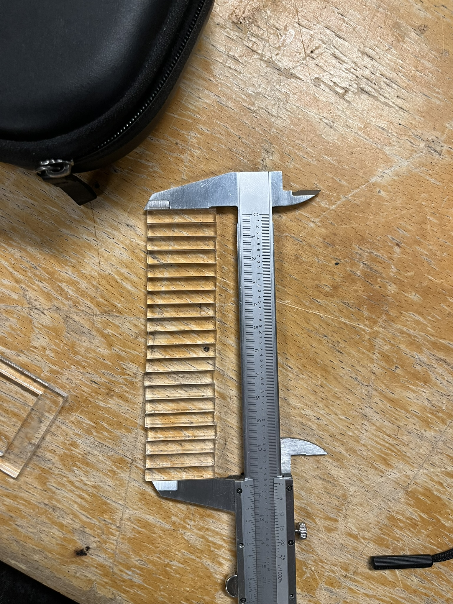
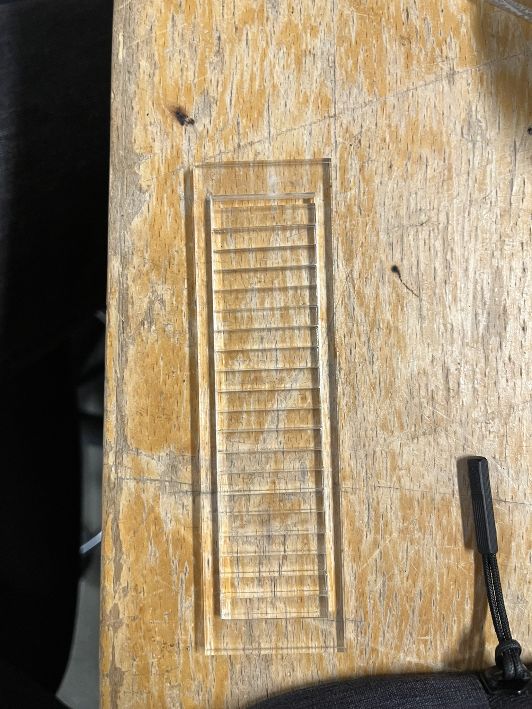
Með mælingum kom í ljós að bilið sem myndaðist vegna skurðarins var 3,78 mm. Fjöldi kassa í rammanum var 20 þ.a. bilin voru 21 talsins. Þá fékkst að lokum að þvermál geislans væri 0,18 mm
Val á hugmynd
Mig langaði að gera eitthvað sem að mynda koma að miklum notum og væri fallegt. Í verkefnalýsingunni er lögð áhersla á geirnegldu punktana og lífræn form, þ.a. ég fór að hugsa um eitthvað sem var ekki kassalaga. Fyrst datt mér í hug að gera lóðastand fyrir handlóðin heima, en eftir smá rannsóknir komst ég að því að efnin sem eru í boði væru sennilega ekki nógu sterk. Þá fór ég næst að hugsa um ltlur hillur og rakst á bil í eldhúsinu hjá mér sem var alveg tilvalið. Það er staðsett á milli veggs og skáps og það eru tveir súlur í því sem að hillan gæti hangið í. Þetta bil er einmitt fyrir ofan kaffivélina þ.a. það væri tilvalið af að hillan myndi rúma kaffibaunapokann svo maður þyrfti ekki að fara langt að sækja hann. Síðan hinum meginn væri hægt að hafa minni hillu fyrir kryddstauka. Þarna var hugmyndin full mótuð og þufti bara að gera nokkrar grunnmælingar og fara huga að forminu sem hillan ætti að taka. Ég fór ekki á neinar vefsíður til að sækja innblástur og hönnunnin kemur öll úr hausnum á mér. Sem er kannski meira nauðsynlegt því hillan þarf að passa inn í mínar einstöku aðstæður.
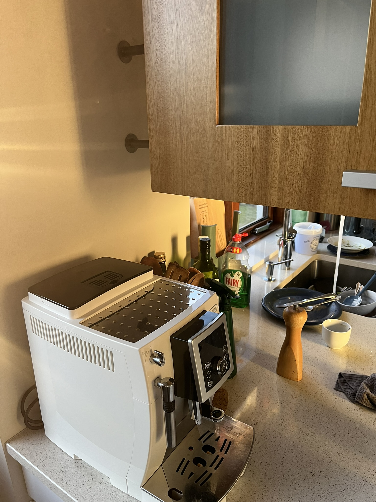
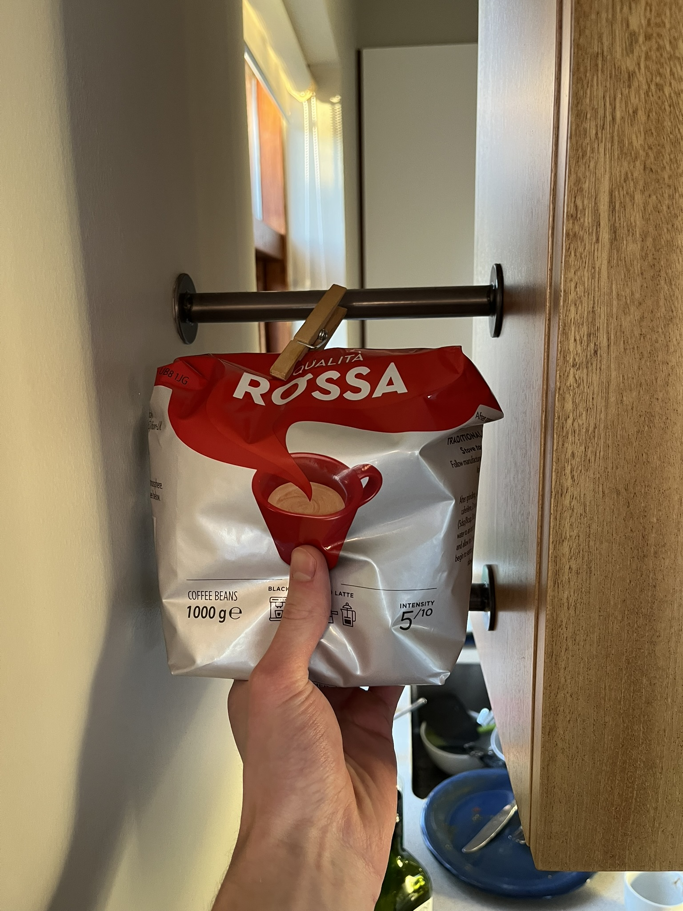
Frumhönnun- og teikning
Ég vildi gera hönnun sem væri ekki með margar beinar línur, þ.a. fyrsta teikningin mín var mjög metnaðarfull og hillan nánast öll bogalöguð
En síðan á næsta stigi hönnunar dróg ég aðeins úr fjölda beygja og hafði hana aðines meira beina. Mér fannst það fallegra og passa betur inn í eldhúsið
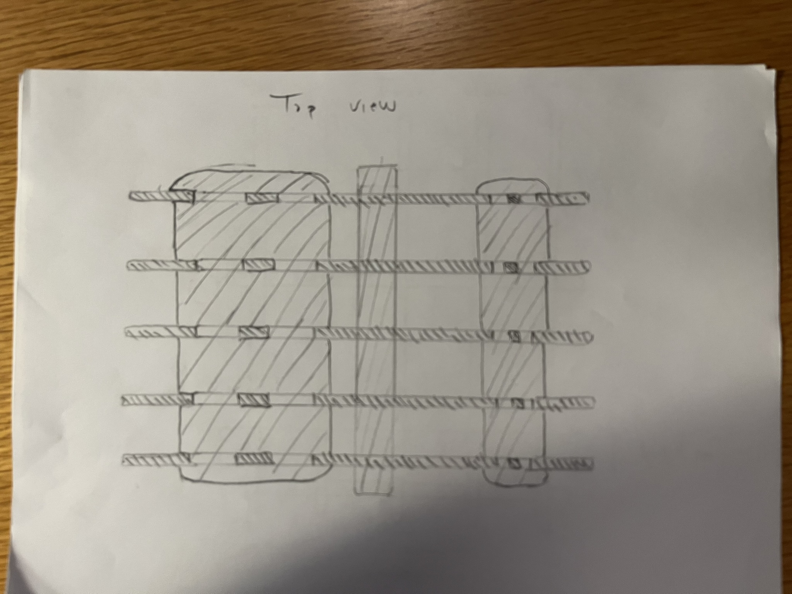
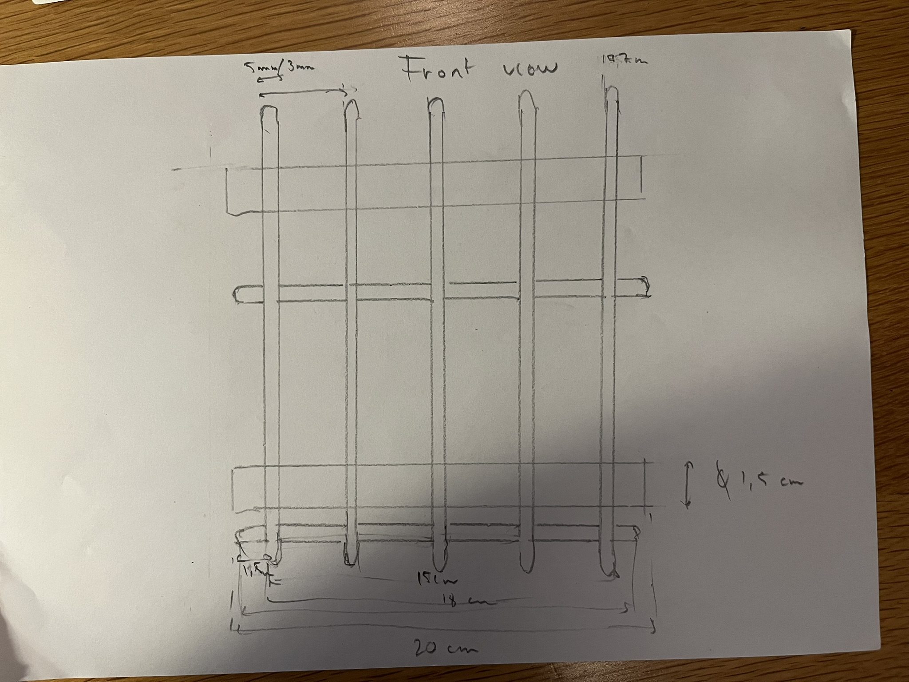
Þ.a. hillan hvílir ofan á efri súlunni og styður sig við neðri súluna til að vera bein. Þetta eru þá 3 tegundir hluta sem að hillan er búin til úr; burðarimlar og tveir lengdir botnplata. Á myndinni eru burðarimlarnir 5 talsins en því má stýra með parametrum. Þða eru geirnelgdir punktar þar sem hillan mætir botnplötunum í endunum. Í þessari frumhönnun voru teiknaðar geirneglingar líka fyrir miðju botnplatanna til að reyna hafa fleiri tegundir festinga, en við betri athugun voru þeir punktar tilgangslausir og gerðu hilluna ljótari því ákveðið að losa sig við þá. Ég velti því mikið fyrir mér hvort ég gæti bætt við fleiri tegundum festinga eins og "wedge joint" en það gekk ekki fyrir þessa hönnun. Ég vona bara að frumleiki hönnunar og notagildi vegi upp á móti. En þá er næsta skref að fara teikna hilluna í tölvu.
Parametrísk hönnun í tölvu
Hillan var teiknuð í Fusion 360 og það var notast við parametríska hönnun. Það er allt parametrískt frá þykkt, lengd, hæð og yfir í fjölda burðarrimla
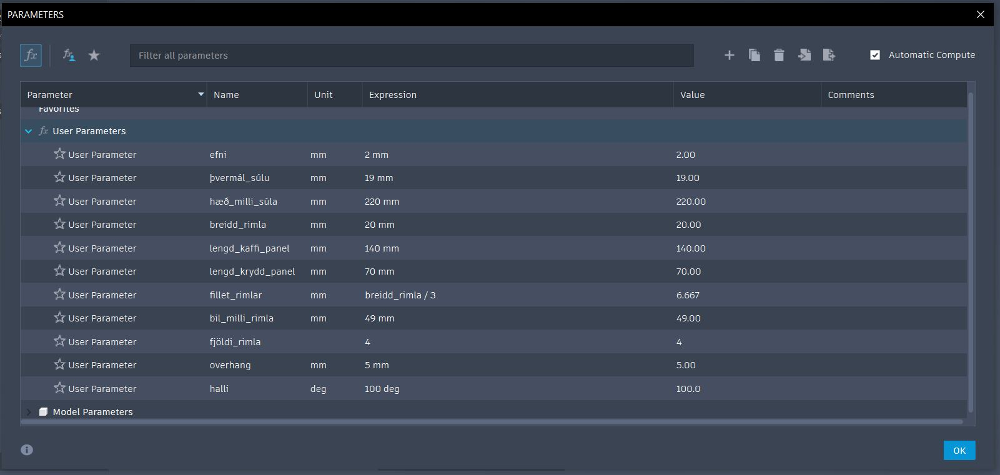
Hér fyrir ofan eru stærðirnar sem voru notaðar í lokahönnuninni.

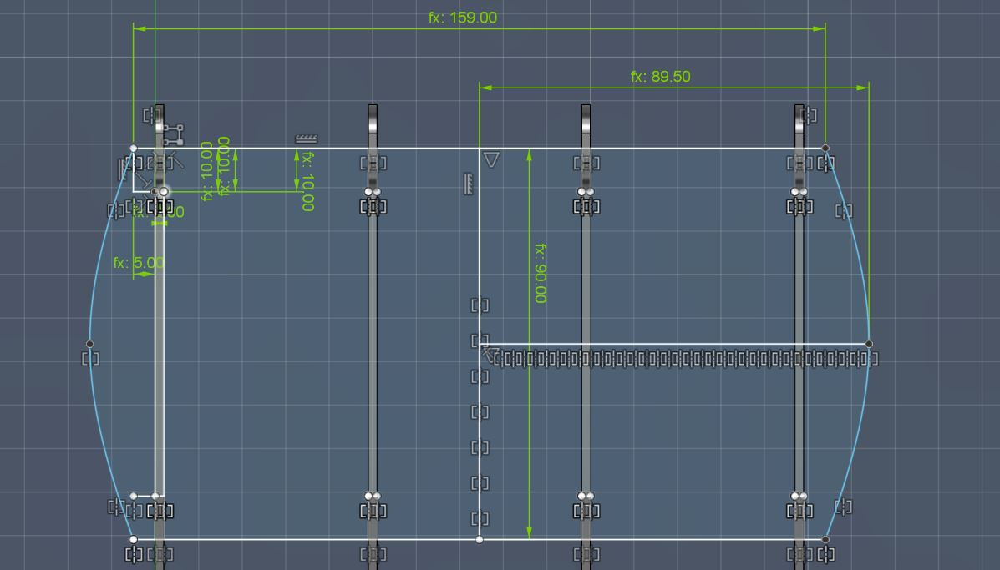
Þessi parametríska hönnun nýttist síðan einstaklega vel því að ég skipti mjög oft um efni eftir því sem að birgðastaðan í VRIII breyttist. Ég minnkaði líka aðens hilluna út frá frumhönnun til að færi minna fyrir henni og fækkaði burðarrimlum um einn. Þetta bil er upprunalega hugsað til að bæta lýsingu í eldhúsinu og hafa rýmið meira opið og ég vildi hafa sem minnst áhrif á það. En hér efst á síðunni má sjá þrívíddarlíkan af lokahönnuninni og öll skjöl fyrir hönnuninna má nálgast í gagnabankanum Brackets.
Efnisval
Upprunalega ætlaði ég að gera hilluna í krossvið en svo kom í ljós að hann var búinn. Þá fór ég að huga að glærum akríl sem passar miklu betur, þ.a. ég er mjög sáttur með það. Vegna þess að maður vill að hillan er sterk datt mér fyrst í hug 5 mm akríl en hann kláraðist, þ.a ég endaði á að nota 2 mm akríl. Ég hafði smá áhyggjur af því að hann yrði ekki nógu sterkur en það var ekki vandamál. Þ.a. skortur á efni var það sem kom mér í 2 mm akríl en hann reyndist síðan koma mjög vel út.
Prófun f. lokaskurð
Til að kanna hvort að hönnunin mín virki áður en allt er prentað var gerð smá prófun. Það voru tvö atriði sem ég vildi prófa voru:
- Hvort það væri hægt að setja hlutinn saman, þ.e. kerf væri rétt
- Beygjuna efst á hillunni, hvernig hún leggst að súlunni

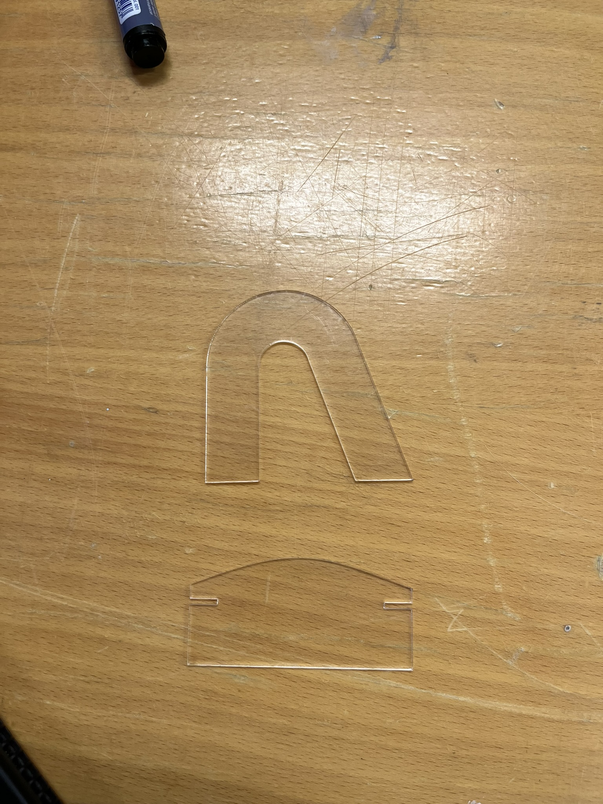
Lokaskurður
Það var búið að vera vandamál með geislaskerann þar sem hann skar ekki alla leið í gegnum plöturnar í seinni hluta keyrslunnar. Í stað þess að búa til skrá með fjórum burðarrimlum og tveimur botnplötum og skera allt í einu var gerð skrá með hlutunum þremur og þeir voru skornir einn í einu.
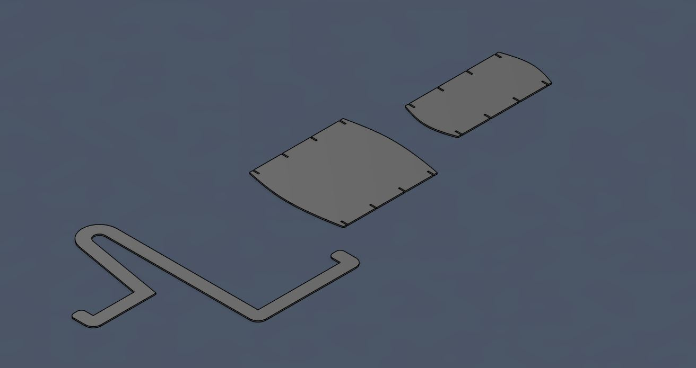
Það voru notaðar sömu stillingar og í prófinu á undan og þetta gekk eins og í sögu. Ég vildi reyna nota afganga til að skera með það í huga að lágmarka úrgang og það tókst að skera einn burðarimil og botnplötu á afgangs akrílplötu sem ég fann.
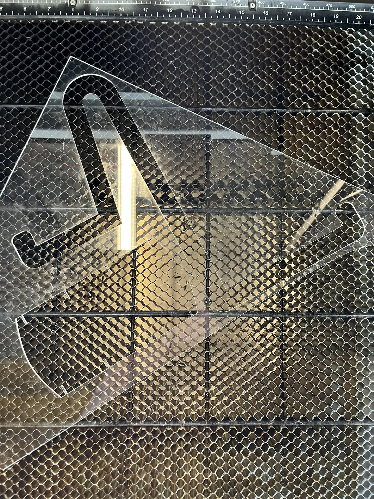
Restin var síðan skorin á nýja plötu og það var reynt að hafa bilið eins lítið og hægt var. Ég reyndi að nota "Arrange" stillingun í Fusion 360 til að koma með bestu uppsetningu fyrir burðarrimlana þrjá og botnplötuna sem var eftir. En það fann ekki leið til að koma seinasta burðarimlinum á 500x500 mm plötu. Ég notaði uppsetningun sem Fusion gaf fyrir hina hlutina en staðsetti síðan þann síðasta sjálfur með hjálp Haffa, því það var greinilega hægt þó að tölvunni tókst það ekki
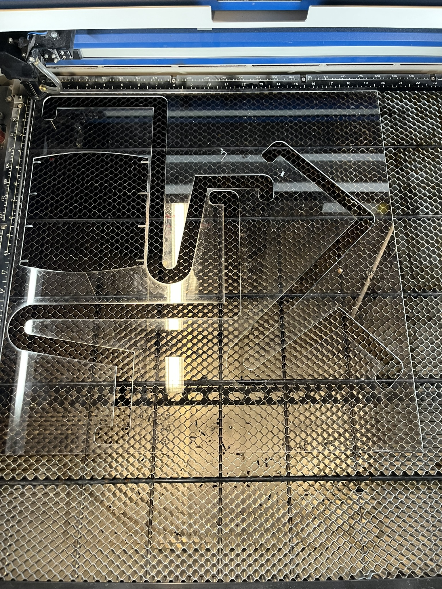
Lokaútkoma
Hillan fór fram úr mínum björtustu vonum. Það var lítið mál að setja hana saman og það þurftu engar festingar eða neitt til að koma henni fyrir heima.
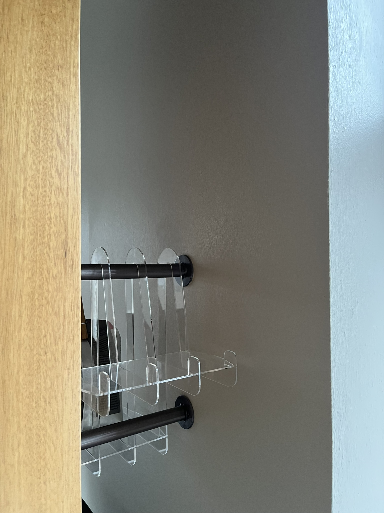
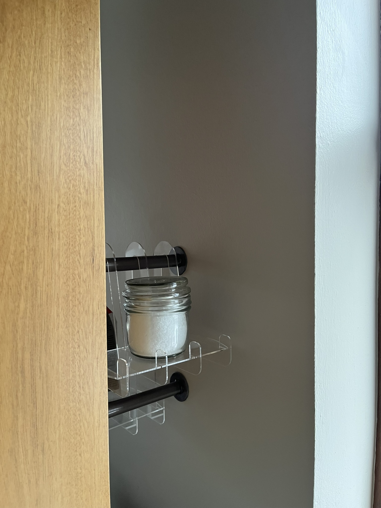
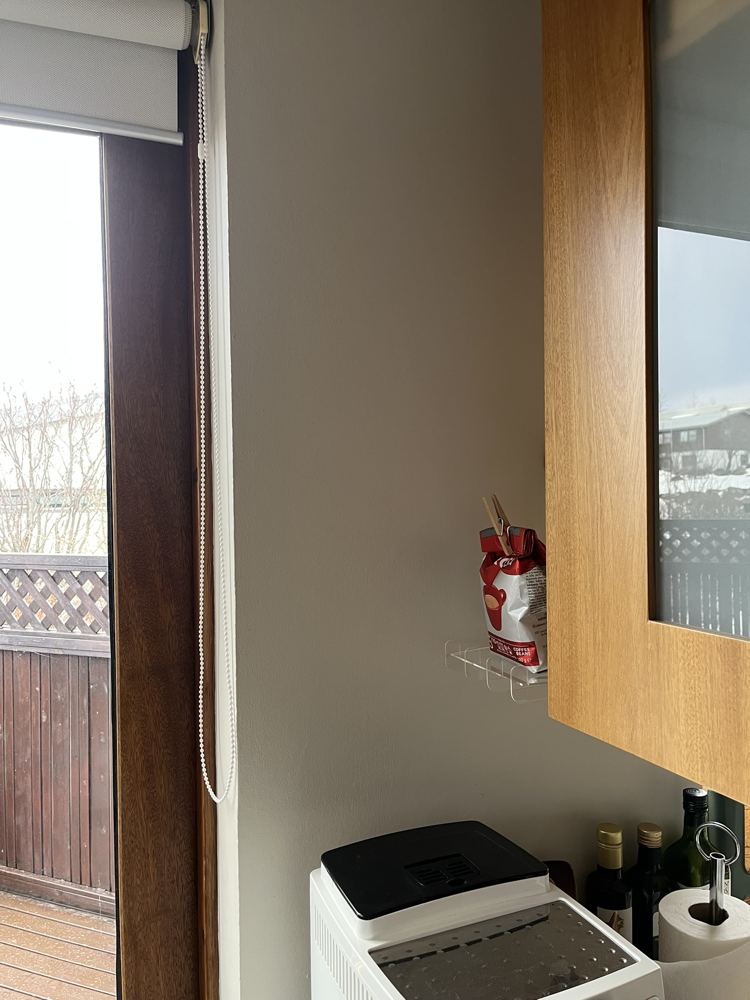
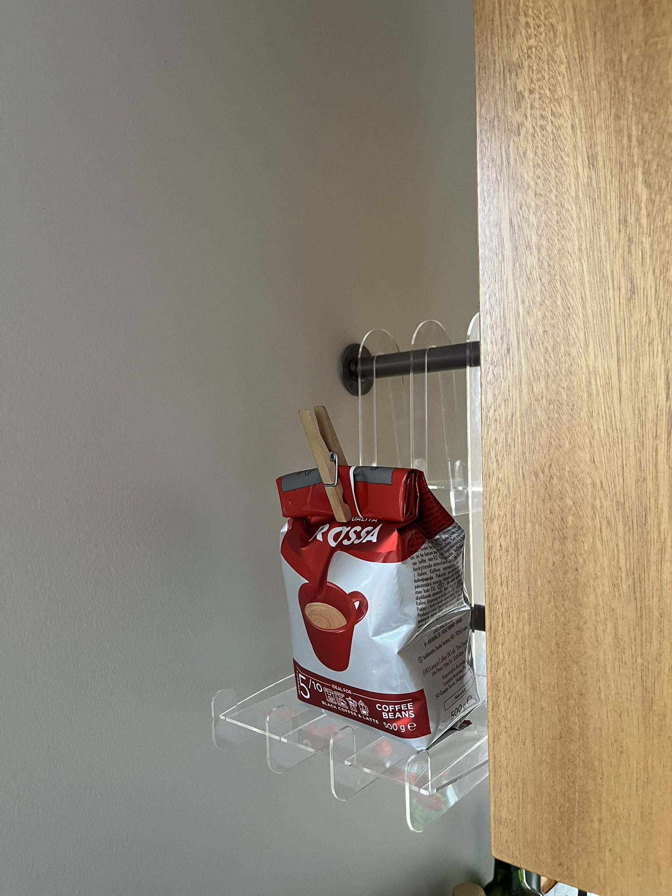
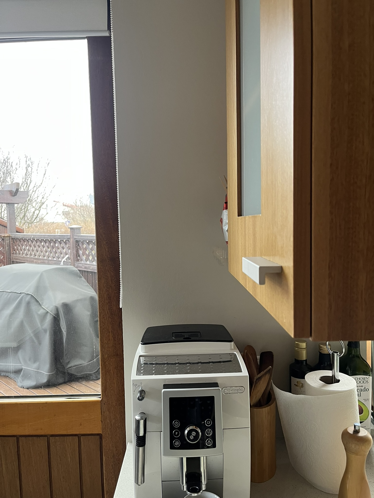
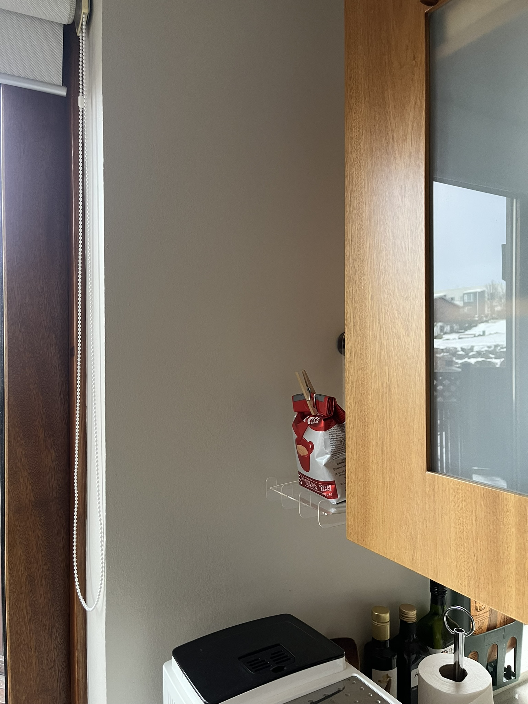
Áskoranir og lærdómur
Til að byrja með var mikil áskorun gera parametriskt módel sem breyttist allt í réttum hlutföllum. Það var mikil brekka og ég þurfti að byrja einu sinni alveg upp á nýtt. En það gerði það að verkum að ég lærði það mjög vel. Önnur áskorun var að læra að nota geislaskerann því ég hafði aldrei gert það áður en undir lokin var maður orðinn nokkuð sjóaður á honum. Mesta áskorunin var í raun að finna góða hugmynd að verkefni, en það kom að lokum (að mínu mati).
Límmiði
Í þessu verkefni þarf að byrja á því að velja hvað á vera á límmiðanum. Valmöguleikarnir er svo margir að það er gott að hugsa um takmörkum tækisins til að þrengja niður valið. Það er hægt að skera út línur inn á miðanum, en það getur flækt það að setja hann á verulega. Ef línan nær þvert yfir miðann er hann kominn í tvo hluta sem ég vil líka forðast. Ég valdi að lokum mynd af vini mínum Sindra þegar við vorum í Edinborg. Þar er hann reykjandi fyrir utan krá, en sú mynd er mjög lýsandi fyrir hann. Hún hentaði líka vel á límmiða því hún er með flotta „silhouette“. Ég vann myndina í Canva en þurfti fyrst að taka út bakgrunninn. Það kostar í Canva þ.a. ég byrjaði á að finna frían „background remover“, remove.bg varð fyrir valinu sem virkaði mjög vel.

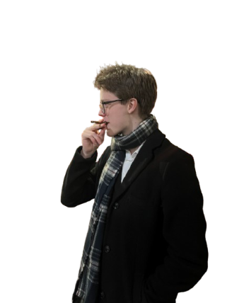
Síðan gerði alla myndina svarta í Canva og færði yfir i Inkscape. Eftir það var framhaldið einfalt, bara trace bitmap og færa yfir í vínylskerann. Svartur vínyll varð fyrir valinu því hann kemur vel út á ljósum bakgrunni og passar vel við þema myndarinnar.


Ég lét hann hafa límiðann samdægurs með málningarteipi til að auðvelda það að setja hann á eittvað. Límmiðinn endaði síðan á Kindle græjunni hans og útkoman mjög fín.


Samantekt
Í þessu verkefni hannaði ég parametríska hillu fyrir kaffibaunir sem var síðan framleidd með geislaskera úr akríl. Hönnunin var gerð í Fusion 360 og kerf-prófun var framkvæmd til að tryggja að pressfit tengingar pössuðu rétt saman. Hillan reyndist bæði sterk og falleg og passaði vel í rýmið sem hún var hönnuð fyrir. Auk þess var hannaður og skorinn út límmiði með vínylskera fyrir vin minn.